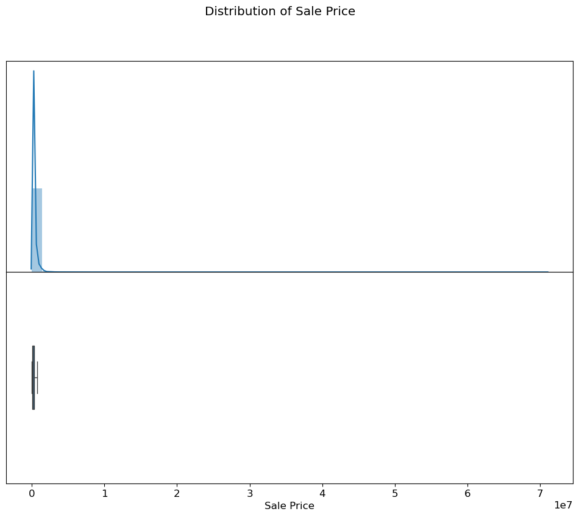
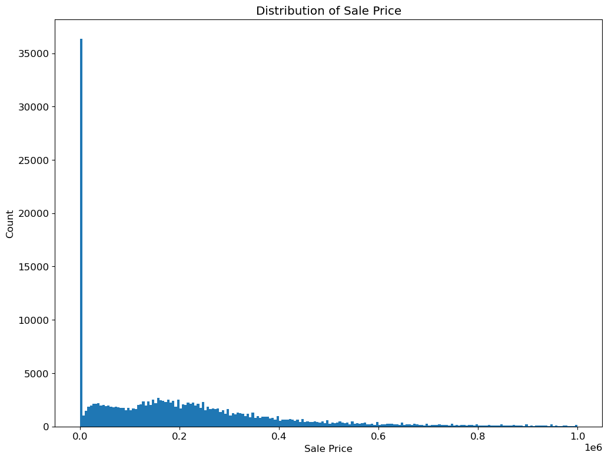
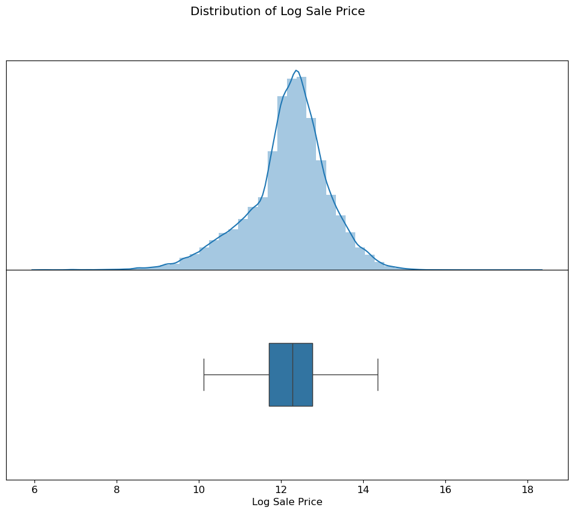
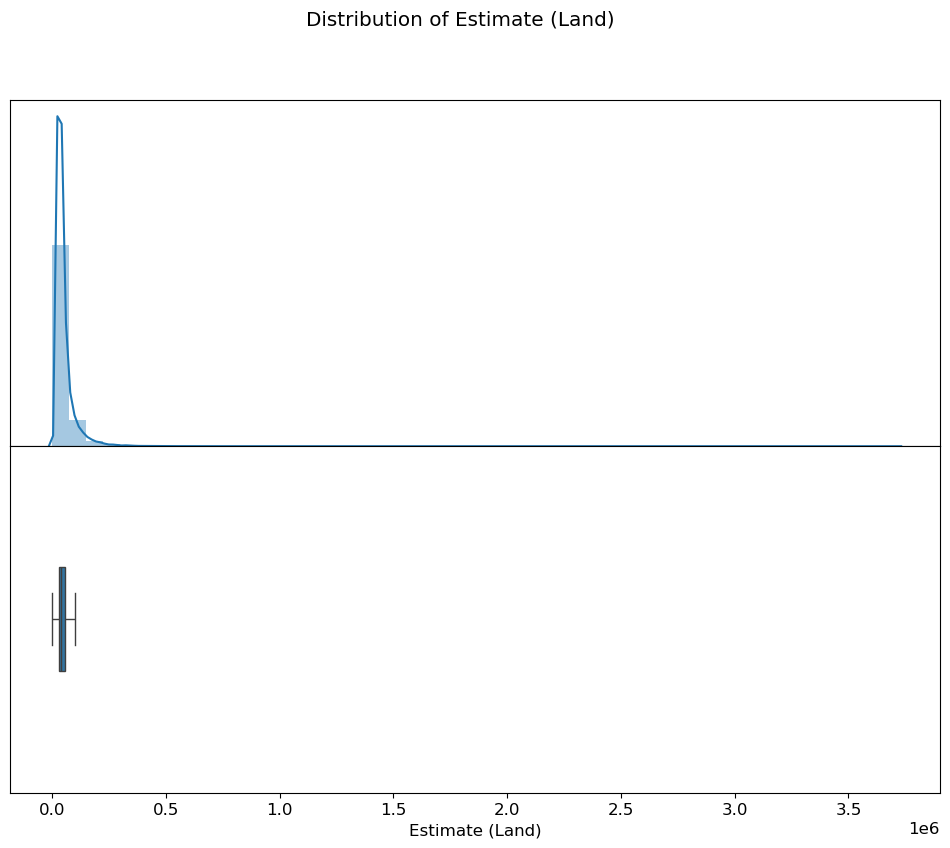
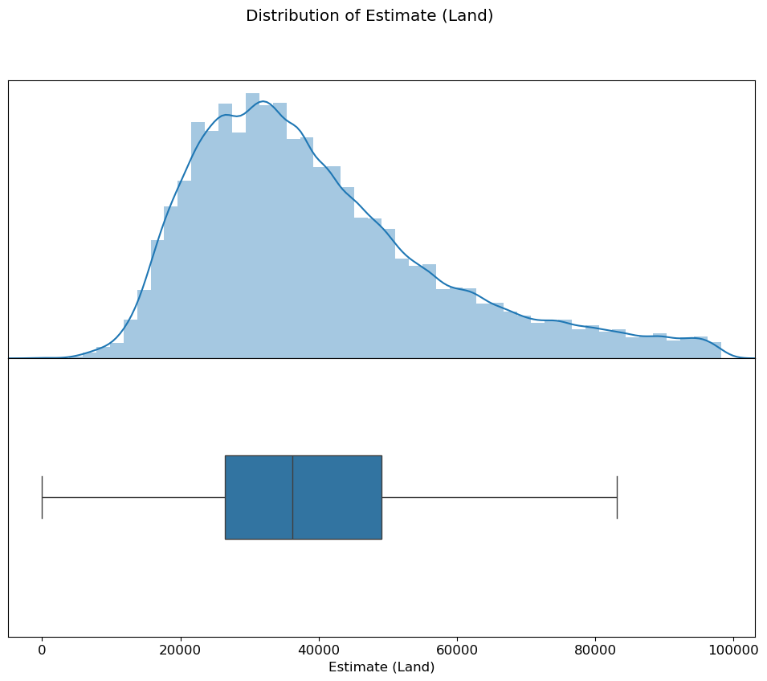
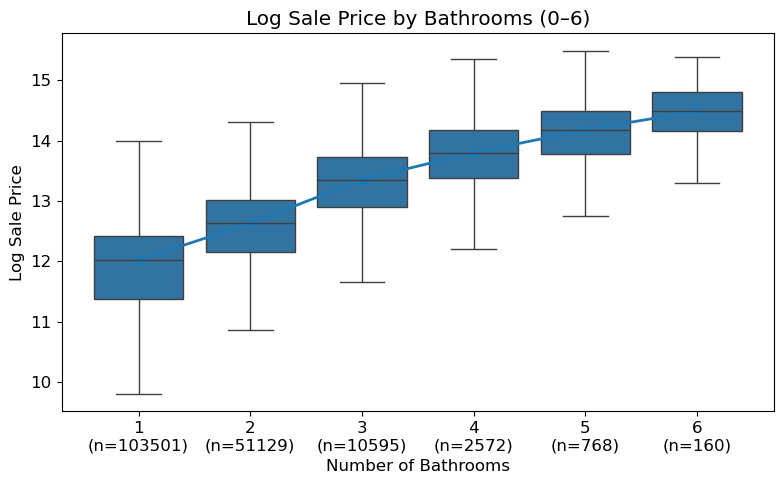
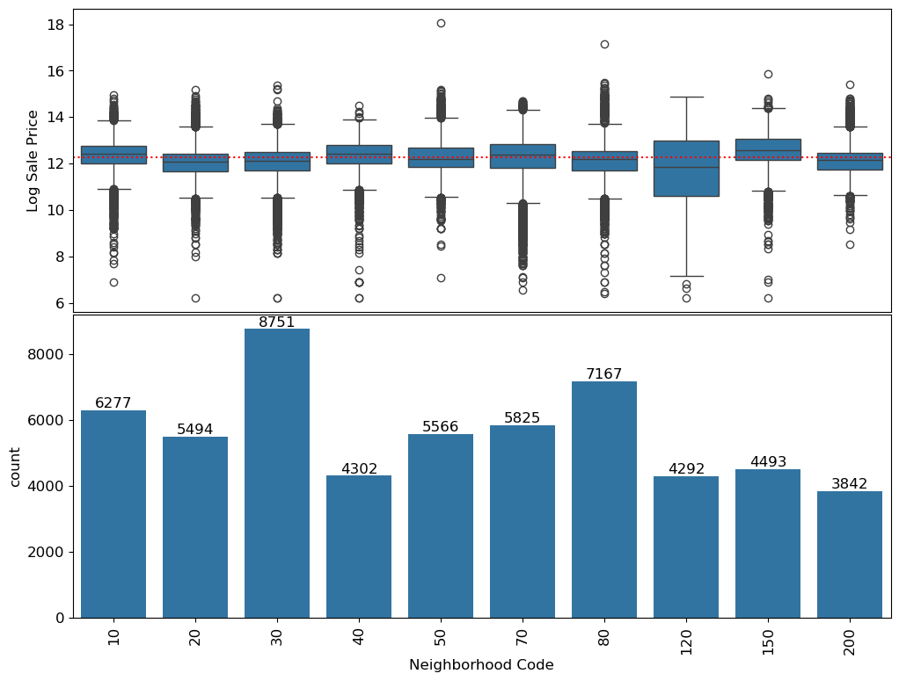
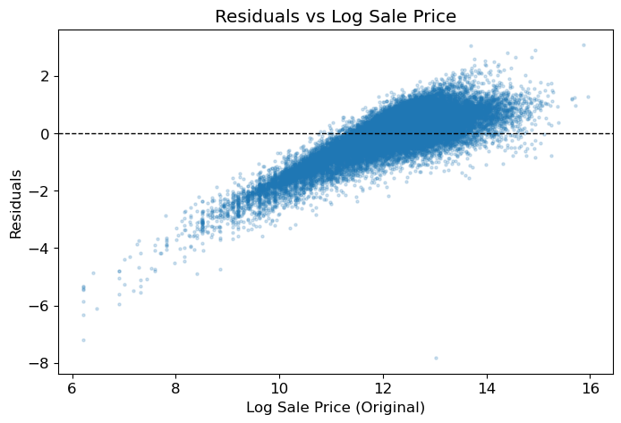
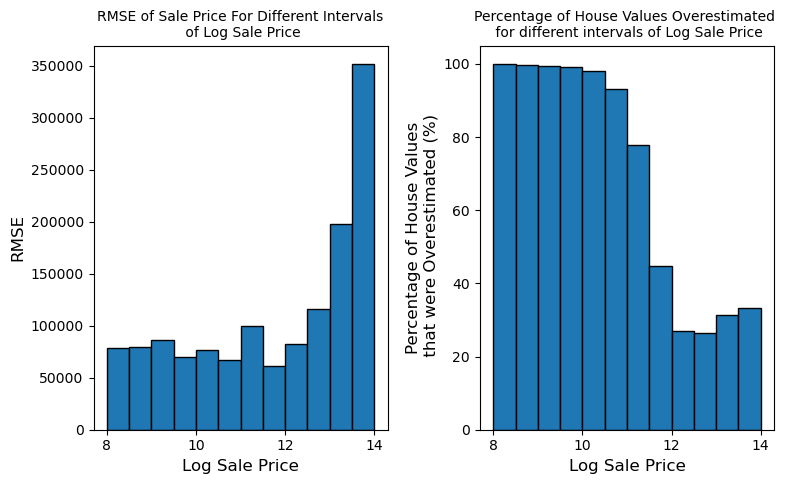
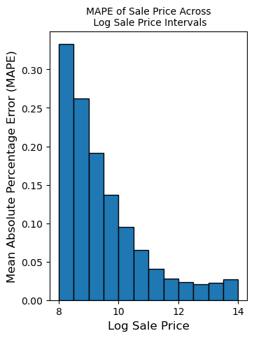

How to Read This
The live results page gives the short recruiter version. This process page is the deeper evidence: it shows how the project moved from messy assessment data to a model audit. I kept the original notebooks in the repo, then translated the useful coding and analysis decisions into a readable web narrative.
1. Human Context and Fairness Framing
The project begins by asking who is affected by a property value prediction. Homeowners, local governments, buyers, lenders, and assessors all have a stake, but the harm is not symmetric. An overassessment can increase a homeowner's tax bill, while systematic underassessment of expensive homes can shift the public tax burden elsewhere.
My original analysis identified the key fairness risk as regressivity: lower-priced homes being overvalued while higher-priced homes are undervalued. That pattern matters because it can increase effective tax rates for working-class and historically disadvantaged neighborhoods even when the model's overall accuracy looks acceptable.
Question I Used to Guide the Work
Can a property assessment model be evaluated not only by aggregate error, but by who receives overestimates and underestimates?
Fairness Definition
A fair model should have residuals centered near zero across price tiers and communities, with similar error dispersion and no consistent overassessment of lower-priced homes.
2. Exploratory Data Analysis
The first notebook focused on understanding the dataset before fitting a model. I inspected sale price distributions, identified placeholder-like low values, and used transformations to make highly skewed variables easier to model.
Granularity
Each row represents a property record with sale, structure, location, and assessment fields. This made parcel-level prediction possible.
Data Quality
Very small sale prices, including values below $500, looked unlike ordinary market transactions and were excluded from the training target.
Skew
Sale price and assessment estimate variables were right-skewed, so log transforms were central to the modeling process.
training_data = initial_data[initial_data["Sale Price"] >= 500]
training_data["Log Sale Price"] = np.log(training_data["Sale Price"])
training_data["Log Building Square Feet"] = np.log(training_data["Building Square Feet"])3. Original Notebook Visualizations
These figures are extracted directly from the original notebook outputs. They show the major visual checkpoints in the analysis: distribution shape, outlier handling, feature relationships, model residuals, and fairness diagnostics.










4. Feature Engineering Decisions
The notebooks explored multiple feature families, then narrowed the portfolio model to a small, explainable feature set. This keeps the public demo readable while preserving the original reasoning in the notebooks.
| Feature Area | Original Analysis | Reasoning |
|---|---|---|
| Log sale price | Converted `Sale Price` into `Log Sale Price` after filtering very low values. | Reduced right skew and made the linear regression target more stable. |
| Building size | Used `Log Building Square Feet` as a size feature. | Size has a clear positive relationship with price, and log scale improves linearity. |
| Bathrooms | Extracted bathroom counts from structured fields or the `Description` text. | Bathroom count is interpretable and captures a meaningful home quality signal. |
| Assessment estimates | Used `Log Estimate (Building)` in the final model. | Prior building estimate carries strong valuation signal while remaining available at prediction time. |
| Neighborhood | Explored top neighborhoods and expensive-neighborhood indicators. | Location matters, but uneven group sizes create overfitting and fairness risks. |
| Categorical attributes | Explored substitution and one-hot encoding for fields like wall material. | Categorical property details can help, but the final demo kept the model compact. |
DEFAULT_FEATURES = [
"Log Estimate (Building)",
"Bathrooms",
"Log Building Square Feet",
]5. Modeling and Validation
The second notebook fits ordinary least squares linear regression using `sklearn.linear_model.LinearRegression(fit_intercept=True)`. The refactored repo keeps that model path in `scripts/run_model.py` and adds a NumPy least-squares fallback so the demo still runs when scikit-learn is not installed.
Pipeline Rules
- Never mutate the input dataframe in place.
- Create target variables only when training.
- Apply outlier filtering only to training data.
- Never drop test parcels simply because they are unusual.
- Fill missing feature values with medians.
Notebook Validation Results
Train RMSE: 0.6002
Holdout RMSE: 0.5937
4-fold CV RMSE: 0.6002 +/- 0.0049The train, holdout, and cross-validation scores are close, which suggests the simple model is not merely memorizing the training set. Because the target is log sale price, the RMSE should be interpreted as a multiplicative error rather than a fixed-dollar miss.
6. Fairness Findings
After fitting the model, I evaluated whether the residuals implied regressive taxation. The key move was to compare overestimation rates by price tier rather than relying only on aggregate RMSE.
| Group | RMSE on Sale Price | Overestimated | Interpretation |
|---|---|---|---|
| Lower-priced homes | About $76,899 | 57.78% | More often predicted above actual value, increasing assessment burden risk. |
| Higher-priced homes | About $245,632 | 27.69% | Less often overestimated, meaning expensive homes were more likely to be underpredicted. |
Why This Matters
Dollar RMSE is larger for expensive homes because the houses are more expensive. But overestimation rate connects more directly to tax fairness. The model pattern aligns with a regressive assessment concern: cheaper homes are more likely to be overvalued, while expensive homes are more likely to be undervalued.
7. Metric Reflection
RMSE is useful for prediction quality, but it can hide who is harmed proportionally. In the notebook, I explored MAPE to evaluate relative error rather than raw dollar error.
def mape(theta, X, y):
y_pred = X @ theta
percentage_error = np.abs((y - y_pred) / y)
return np.mean(percentage_error)My conclusion was that no single metric is enough. A responsible assessment workflow should report aggregate accuracy, proportional error, residual parity, and over/under assessment rates across meaningful groups.
8. What the Refactor Added
The original project lived primarily as course notebooks. The portfolio refactor adds a cleaner engineering surface around that work:
- Reusable Python modules for feature engineering and fairness diagnostics.
- A command-line script for training, validation, and optional prediction export.
- A smoke test that can run without access to the original course data.
- This live narrative page with extracted notebook visualizations.
- A concise results page suitable for resume and LinkedIn links.
Bottom Line
The project is not just “I trained a house price model.” The stronger story is: I built a valuation model, checked that it generalized, then audited whether its errors could create unfair tax outcomes. That is the version worth showing recruiters.